3D Graphics in HTML5 Canvas
by Kevin Roast
More HTML5 trickery at kevs3d.co.uk/dev and updates via @kevinroast
Not WebGL!
WebGL ~= OpenGL ES 2.0
GPU Hardware, Programmable Shaders

Graphics. Oldskool.
Emulating the classic OpenGL "fixed function pipeline" in software.
For fun, not profit.
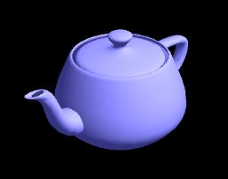 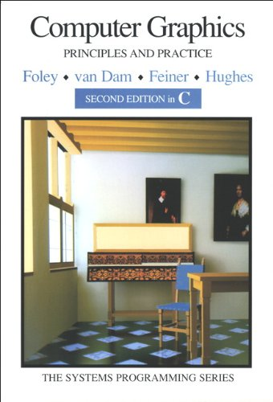
Start Simple
"From small beginnings come great things."
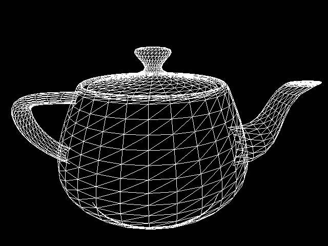 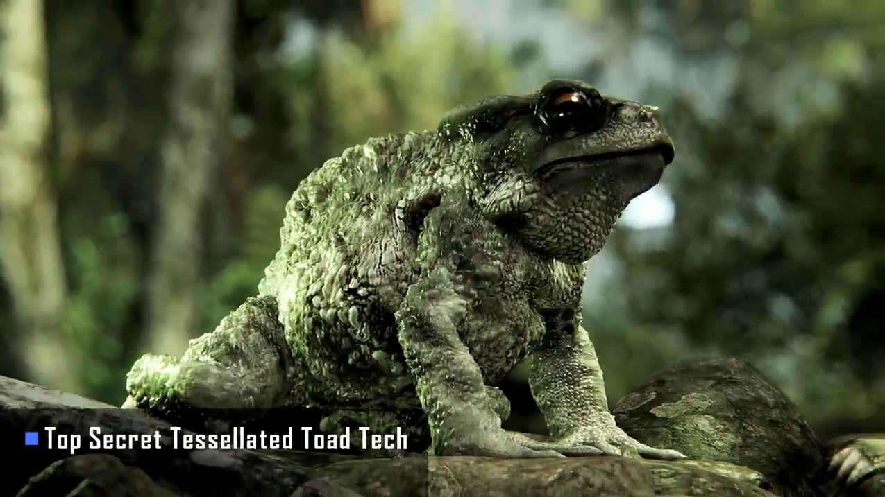
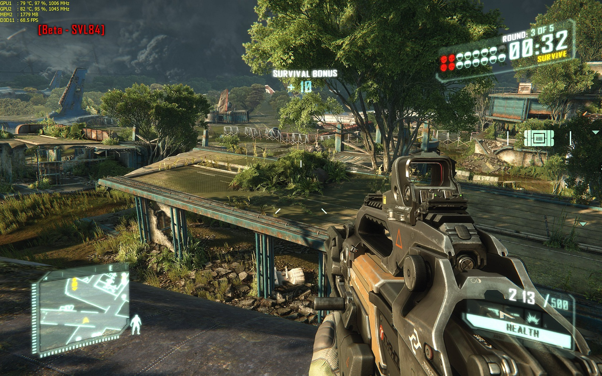
Cartesian coordinate system
Signed distances to three mutually perpendicular planes (pardon?)
X axis goes to right
Y axis goes up
Z axis goes "into" the screen
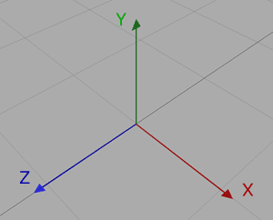
Object Geometry
List of Points {X, Y, Z}
List of Polygons (triangles)
Three vertices V0,V1,V2 connect a triangle together
Materials; colour, properties, textures
Hello triangle
{
vertices: [
{x:0, y:0, z:0},
{x:1, y:1, z:0},
{x:1, y:0, z:0}
],
polygons: [
{
vertices: [0,1,2],
colour: [255,255,255]
}
]
}
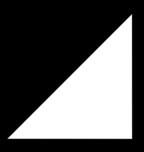
Matrix Multiplication - scary math!
Homogeneous coordinates
4D Transformation matrices
Model, view projection
Cross product, dot product
Euclidean geometry, quaternions
!!!KILL ME NOW!!!
Homogeneous coordinates
Consider 3D vertices as a (x,y,z) triplet.
Introduce 4th element 'w'. Now have (x,y,z,w) vectors.
remember this
If w == 1, then the vector (x,y,z,1) - a position in space.
If w == 0, then the vector (x,y,z,0) - a direction.
Homogeneous coordinates allow of use of a single mathematical formula to deal with both cases.
Solving of equations for any coordinate - including those at infinity by using 'w' to map to projective space.
Transformation matrices
A matrix is an array of numbers with a predefined number of rows and colums.
In 3D graphics we only use 4x4 matrices.
Allows the transformation of (x,y,z,w) vertices.
multiplying the vertex with the matrix
\[ \begin{bmatrix} a & b & c & d \\ e & f & g & h \\ i & j & k & l \\ m & n & o & p \end{bmatrix} \times \begin{bmatrix} x \\ y \\ z \\ w \end{bmatrix} = \begin{bmatrix} ax + by + cz + dw \\ ex + fy + gz + hw \\ ix + jy + kz + lw \\ mx + ny + oz + pw \end{bmatrix} \]
Building matrices is hard
Multiplying by them is tedious
glMatrix (see http://glmatrix.net/)
"JavaScript Matrix and Vector library for High Performance WebGL apps"
var m = mat4.create();
mat4.multiply(out, m1, m2);
mat4.rotateX(out, m, radians);
var v = vec3.fromValues(1, 0, 0);
mat4.scale(out, m, v);
mat4.translate(out, m, v);
Coordinate Transformations
The 3D graphics pipeline
Local Object coordinates -> local matrix
World coordinates -> camera matrix
View (or Eye) coordinates -> perspective matrix
Perspective (& clip) coordinates -> viewport transformation
Screen coordinates
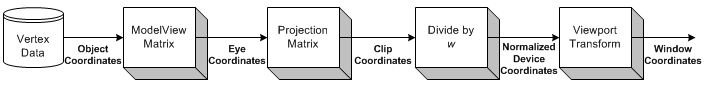
Local Object coordinates
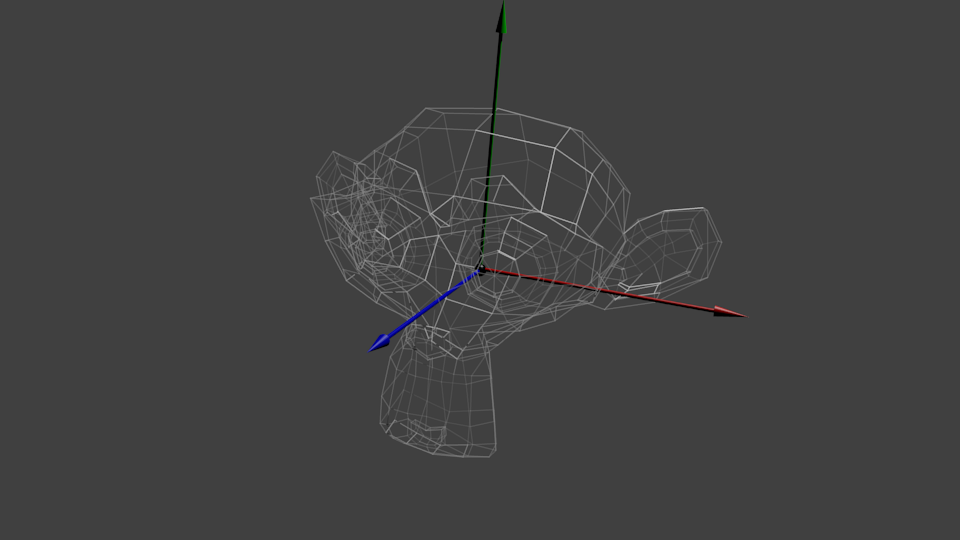
Each entity typically centred on the origin.
local matrix > World coordinates
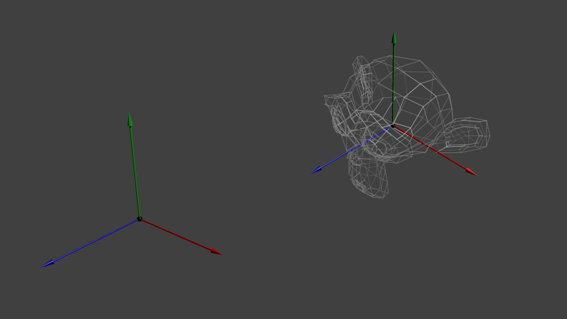
Multiply by local matrix; encodes scale, rotate, translate...
Lighting is performed in 'world space'
Move the universe not the camera
"I understand how the engines work now. They don't move the ship at all. The ship stays where it is and the engines move the universe around it." - Cubert Farnsworth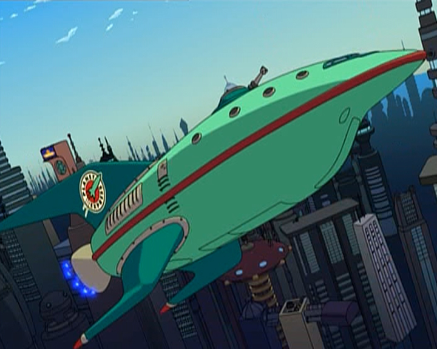
camera matrix > View (or Eye) coordinates
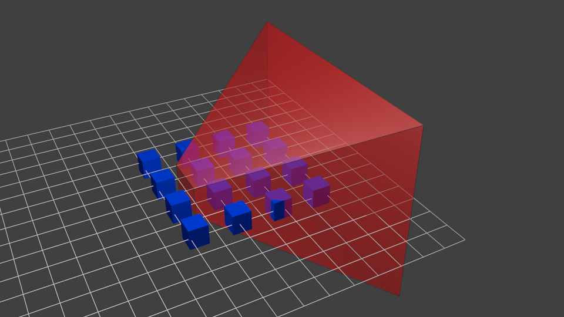
Multiply each vertex by camera matrix
perspective matrix > Perspective (& clip) coordinates
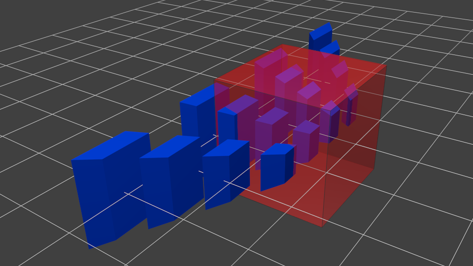
Multiply each vertex by perspective matrix
behind the frustum (normalised device coordinates -1 to 1)
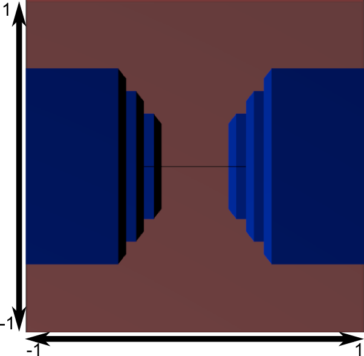
Ignore polygons completely outside the clipping bounds
screen coordinates
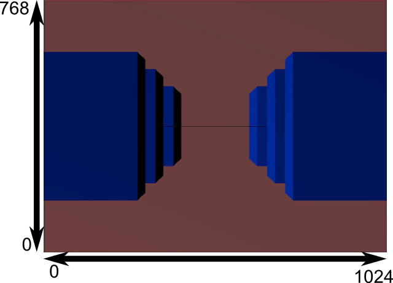
We know what to draw, and where to draw it...
lighting and shading
Global Illumination = Ambient Light + Diffuse Light + Specular Light
Ambient Lighting - constant lighting in all directions, colors all pixels of an object the same.
Diffuse Lighting - both the light direction and the object surface normal. Varies across surface of an object due to light direction and changing surface normal vector.
Specular Lighting - the bright highlights that occur when light hits an object and reflects back toward the camera.
lighting and shading - normal vector
Perpendicular to the surface.
The cross product of two sides of the triangle equals the surface normal.
\[ {a} = \{ a_1, a_2, a_3 \} {b} = \{ b_1, b_2, b_3 \} \]
\[ {a} \times {b} = \{ a_2b_3 - a_3b_2 , a_3b_1 - a_1b_3 , a_1b_2 - a_2b_1 \} \]
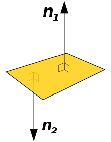
lighting and shading - dot product
Multiplication with another Vector - the "dot product"
The angle between two vectors.
\[{a}\cdot {b} = \|{a}\| \|{b}\| \cos\theta\]
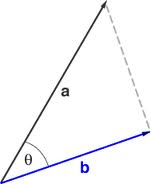
distant lighting
Infinitely distant light, parallel rays
No position, just a direction
Very simple dot product calculation - inverse of the light direction
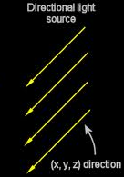
point lighting
Positional light with fall-off
With a position, light emits equally in all directions
Dot product calculation based on angle to light in scene and distance
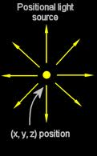
rendering
HTML5 canvas basic drawing primitives
- Rectangles
- Paths - start and end through N points
- Stroke path (outlines)
- Fill path (solid shape)
- Arcs and Bezier curves
- Images - very flexible; any section, resize, clip to path
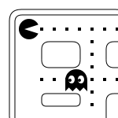
Putting it all together
phoria.js
https://github.com/kevinroast/phoria.js http://www.kevs3d.co.uk/dev/phoria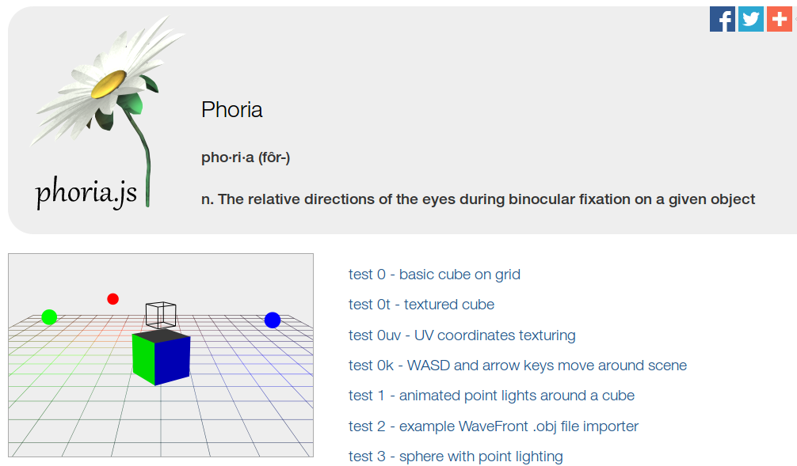
Putting it all together
Object definition, 3D transformation pipeline, rendering to HTML5 canvas...
Where do you go next?
Physics, animation, texturing, particles...
Resources
HTML5 3D libraries and tutorials
https://github.com/kevinroast/phoria.js
https://code.google.com/p/jsc3d/
https://code.google.com/p/mea3d/
tutorial-series-learning-how-to-write-a-3d-soft-engine-from-scratch
lets-build-a-3d-graphics-engine-points-vectors-and-basic-concepts